شرح البروتوتايب التفاعلي
غرفة عمليات المحاكاة — من الرصد إلى الإغلاق الموثّق
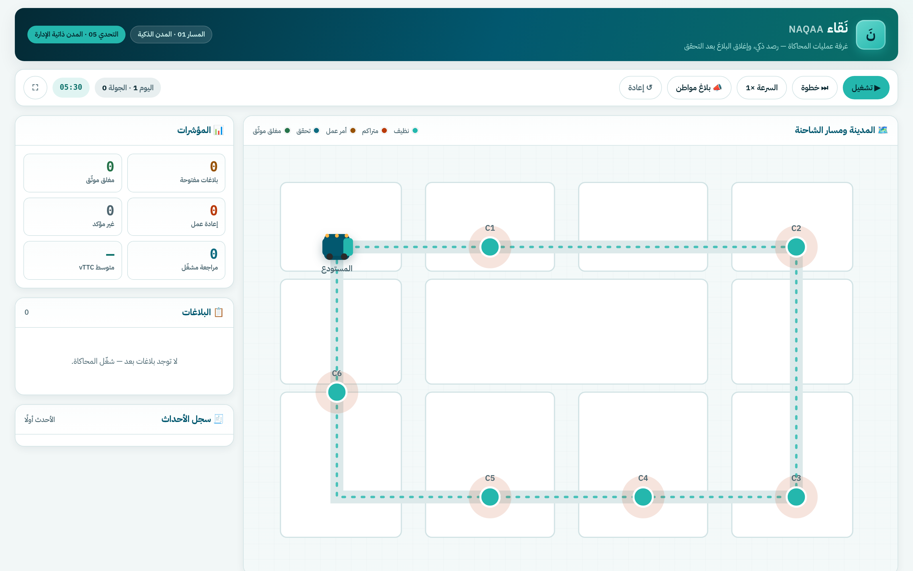
نَقاء يحوّل شاحنة جمع النفايات إلى عين ثانية على الشارع. ترصد المخلفات حول الحاويات أثناء جولتها المعتادة، ويُنشأ أمر عمل، ثم تتحقق الشاحنة بنفسها في مرور لاحق قبل أن يُغلق البلاغ. البروتوتايب يحاكي هذه الحلقة كاملة في المتصفح.
الفجوة التي تعالجها الفكرة: الفصل بين رصد المشكلة وإثبات زوالها قبل الإغلاق.
الفرع hamedgha · اختبار آلي بالمتصفح: صفر أخطاء
تشغيل، خطوة، سرعة، بلاغ مواطن، إعادة، ملء الشاشة — مع الساعة والجولة.
الشاحنة، المستودع، الحاويات C1–C6 بألوان حالتها.
ما تراه الشاحنة الآن، وقرار الكشف.
أرقام حيّة وقائمة البلاغات بحالاتها.
كل خطوة موثّقة بالوقت، وشرح مبسّط لما يحدث.
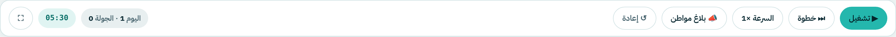
تبدأ الشاحنة جولتها من المستودع وتمرّ على الحاويات بالترتيب.
تتقدم إلى الرصد التالي ثم تتوقف — مثالية للشرح أمام اللجنة.
×1 / ×2 / ×4 — الجولة الكاملة في أقل من دقيقة.
يُدمج في البلاغ القائم لنفس الموقع بدل إنشاء بلاغ مكرر.
تصفير كامل للمحاكاة والسجل والمؤشرات.
ساعة محاكاة تبدأ 05:30، وكل مرور بعد ساعتين — لحساب vTTC.
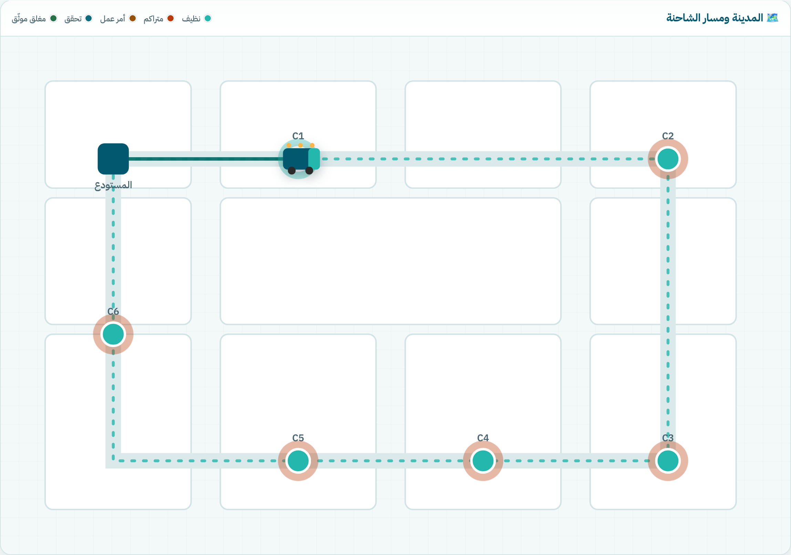
لون كل حاوية يعكس حالة بلاغها لحظيًا، والمسار المقطوع يُرسم خلف الشاحنة:
في الصورة: C1 أصبحت برتقالية بعد الرصد الأول، والشاحنة تتابع نحو C2.
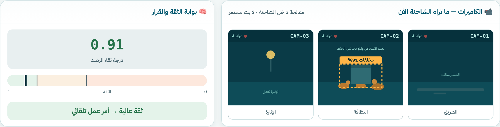
تراقب حالة الطريق — امتداد مستقبلي للحفر.
الكاميرا المعنية بالرصد: صندوق كشف + نسبة الثقة، وتعتيم الأشخاص واللوحات قبل الحفظ.
تراقب أعمدة الإنارة — امتداد مستقبلي للأعطال.
الذكاء الاصطناعي يكشف فقط. القرار لبوابة الثقة والمشغّل، والإغلاق لا يكون إلا بتحقق لاحق.
العتبتان قيمتان أوليتان تُعايَران على بيانات التحقق الميدانية.
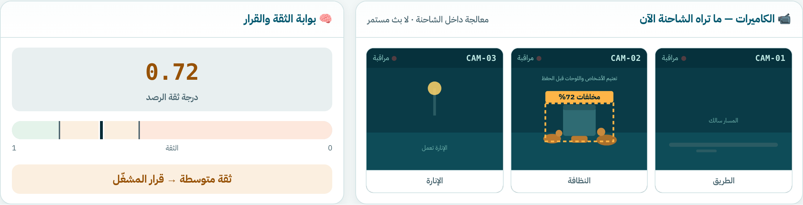
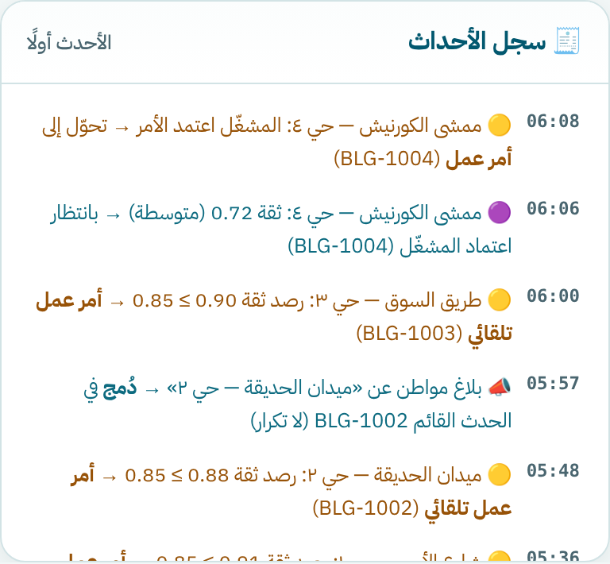
في موقع «ممشى الكورنيش» رُصد تراكم بثقة 0.72. البلاغ يدخل حالة مراجعة مشغّل ثم يعتمده المشغّل فيتحوّل إلى أمر عمل — المساءلة البشرية محفوظة في الحالات غير الحاسمة.
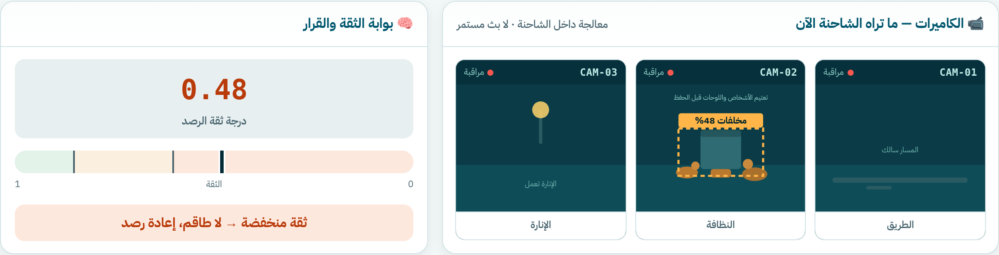
لا بلاغ ولا طاقم — يُعاد الرصد في المرور التالي. تجنّب زيارة مهدورة.
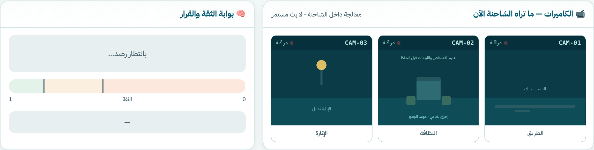
أكياس أمام الحاوية في موعد الجمع ليست مخالفة — النظام يميّزها صراحة ولا يُنشئ أمر عمل.
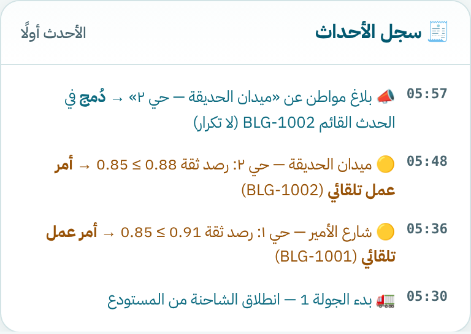
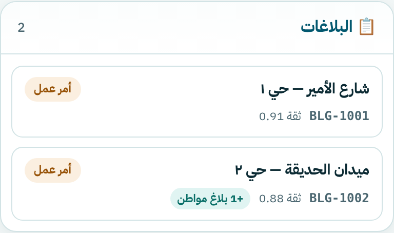
عند الضغط على «بلاغ مواطن» لموقع فيه بلاغ مفتوح، يُدمج البلاغ في الحدث القائم ويظهر عدّاد +1 بلاغ مواطن على البطاقة — بلاغ واحد لكل موقع، وزيارة واحدة.
لو لم يكن للموقع رصد سابق، يُحال البلاغ للمراجعة الفنية بدل إرسال طاقم مباشرة.
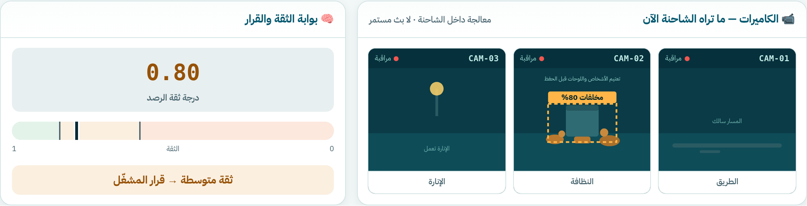
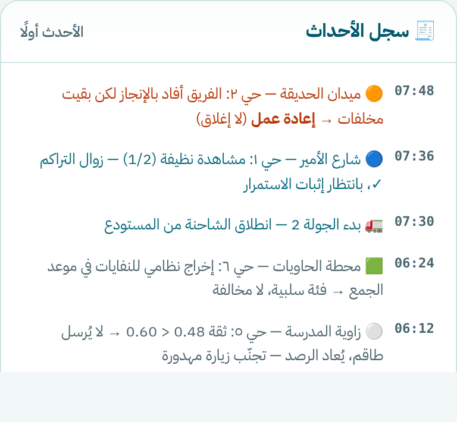
في الجولة الثانية، أفاد الفريق بإنجاز «ميدان الحديقة»، لكن CAM-02 ترى مخلفات متناثرة. البلاغ يتحوّل إلى إعادة عمل، تُعاد المهمة، ولا يُغلق. هذا ما لا تفعله الأنظمة المراجعة: الإغلاق بالدليل لا بالإفادة.
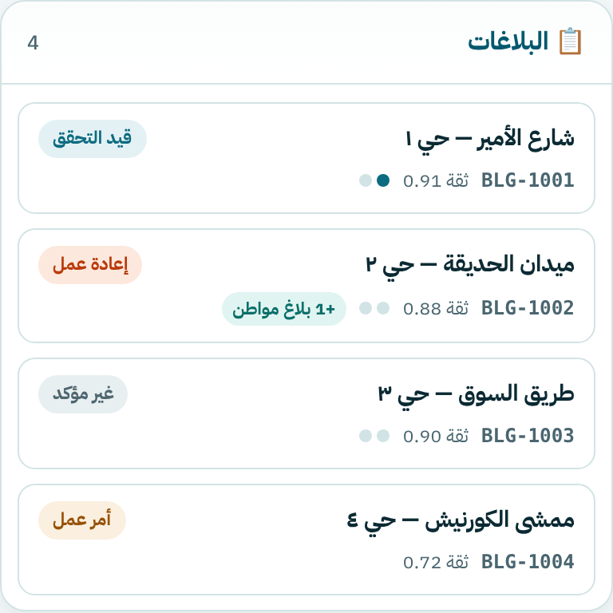
لا يُغلق البلاغ لمجرد غياب المخلفات من لقطة واحدة — إن كان المشهد محجوبًا فالحالة غير مؤكد ويُعاد الرصد في المرور التالي دون احتساب مشاهدة نظيفة.
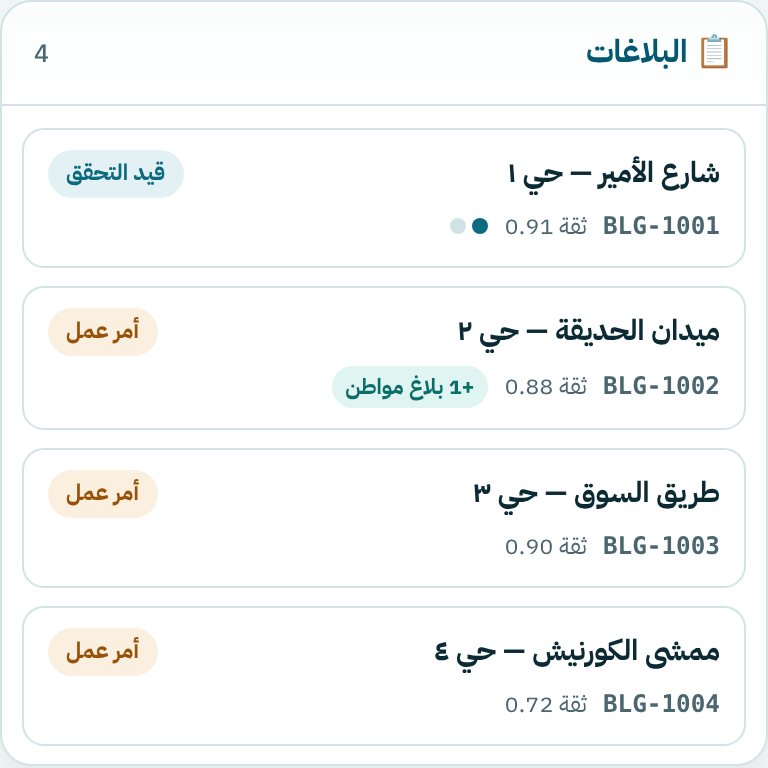
الجولة 2: زوال التراكم ✓ — نقطة واحدة من اثنتين
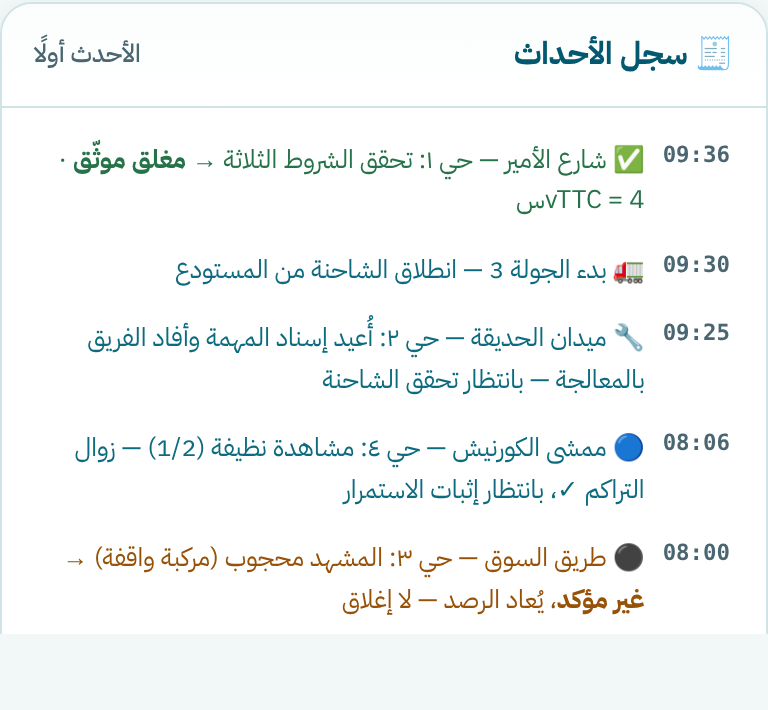
الجولة 3: استمرار النظافة ✓ ووضوح المشهد ✓ → إغلاق وحساب vTTC
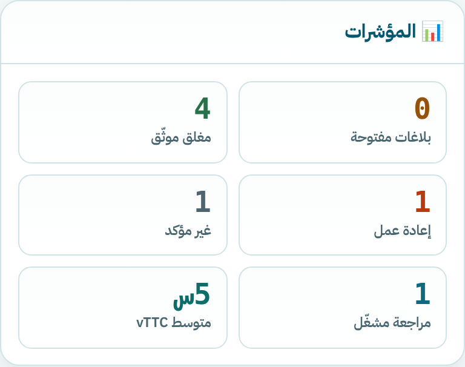
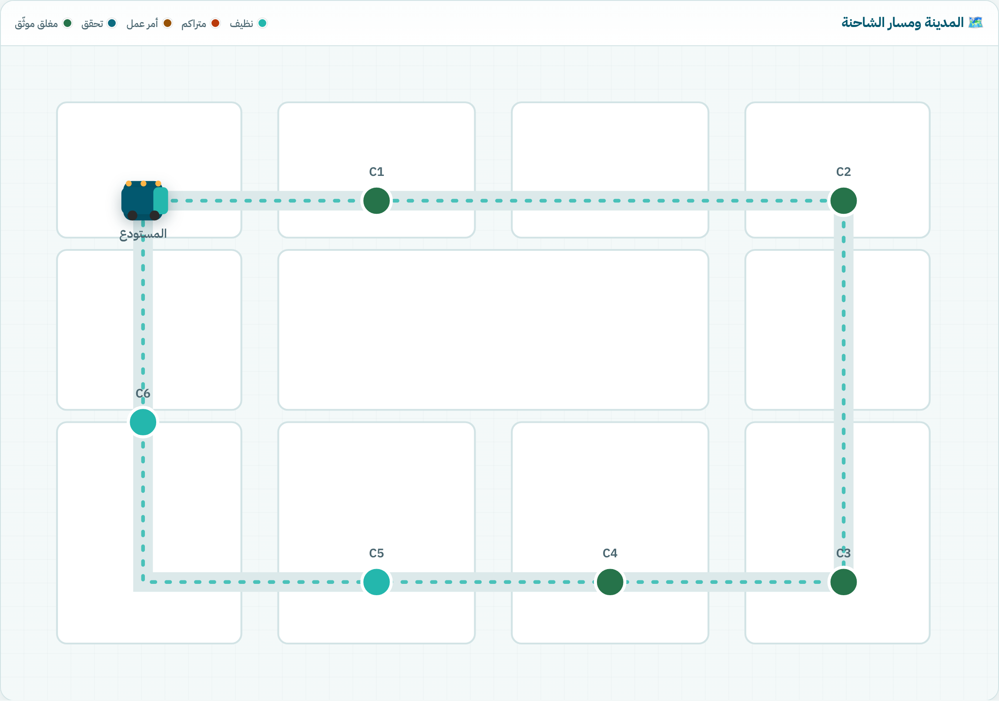
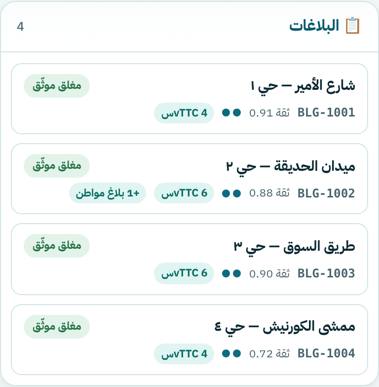
| الموقع | ما تراه الشاحنة | قرار النظام | النتيجة |
|---|---|---|---|
| C1 | تراكم بثقة 0.91، ثم مروران نظيفان | أمر عمل تلقائي → تحقق بمشاهدتين | مغلق موثّق vTTC 4س |
| C2 | تراكم 0.88، الفريق «أنجز» لكن بقيت مخلفات | إعادة عمل — لا إغلاق بالإفادة | إعادة عمل ثم إغلاق · 6س |
| C3 | تراكم 0.90، ثم مركبة تحجب الحاوية | غير مؤكد → إعادة رصد | غير مؤكد ثم إغلاق · 6س |
| C4 | تراكم بثقة متوسطة 0.72 | مراجعة المشغّل → اعتماد أمر العمل | مراجعة مشغّل ثم إغلاق · 4س |
| C5 | تراكم محتمل بثقة 0.48 | لا طاقم — إعادة رصد | زيارة مهدورة تم تجنّبها |
| C6 | أكياس في موعد الجمع النظامي | فئة سلبية — لا مخالفة | لا أمر عمل |
يُضاف إليها بلاغ مواطن يُدمج في الحدث القائم عند الطلب.
متى: زوال التراكم + استمراره مشاهدتين + مشهد واضح.
ماذا: يُغلق البلاغ ويُحسب vTTC.
متى: أفاد الفريق بالإنجاز وبقيت مخلفات.
ماذا: تُعاد المهمة وتُصفَّر مشاهدات التحقق.
متى: المشهد محجوب أو الدليل غير كافٍ.
ماذا: يُعاد الرصد في المرور التالي، لا إغلاق.
متى: ثقة بين 0.60 و 0.85.
ماذا: يعتمد المشغّل أمر العمل أو يرفضه.
بروتوتايب تفاعلي يشرح الفكرة كاملة في أقل من دقيقة
حامد بن أحمد الغامدي · عبدالله بن عوضه الأحمري — فريق Twenty Thirty